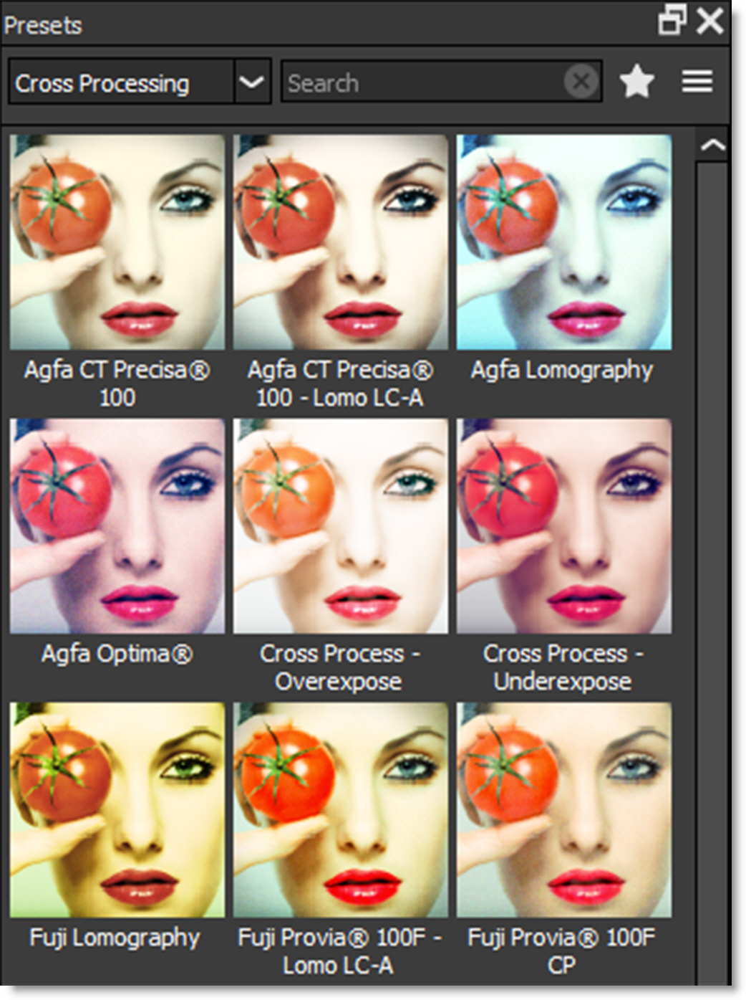
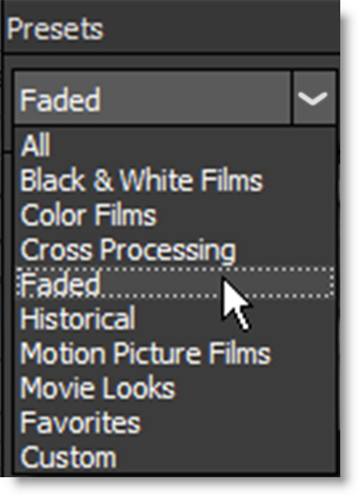
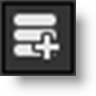
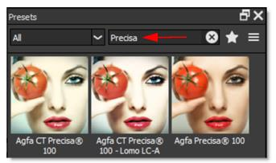
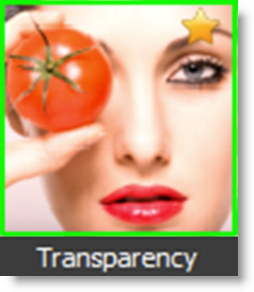
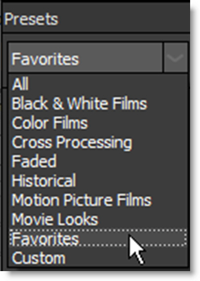

Presets
The Presets window allows you to select from a set of pre-defined presets. Presets are available for most filters so that you can easily click through the various choices.
Most filters contain multiple preset groups which are selectable at the top of the window.
Clicking once on a preset modifies the image in the Viewer. As you click on different presets, the image in the Viewer will update. This allows you to quickly try out several different presets.
Once you have found a preset that you like, click on the Add Layer icon at the top left of the Layers window to add the filter as a layer. Additional filters can then be added.
Note: Double-clicking on a thumbnail in the Presets window automatically adds the filter to the image in the Viewer as well as a layer in the Layers window.
Preset Searching
Presets can be searched for by entering text in the search field located at the top of the Presets window. The pattern remains in effect when you switch filters, but it will clear automatically when you switch layers in the Layers window or apply a preset. Clear the search text to return the Presets window to it’s normal state.
To search for a preset:
1 Select a filter, for instance Grads/Tints > Gels.
2 In the Presets window search field, type red.
All presets with red in the name are shown.
3 In the search field, type sun|blue.
Any preset with sun or blue in the name is shown.
Favorites
Presets can be tagged as a Favorite allowing them to be sorted separately in the Presets window as well as in the Favorites tab of the Filters window.
You can tag a preset as a Favorite by selecting the preset and pressing the Toggle Favorite icon located at the top right of the Presets window.
Presets tagged as a favorite display a yellow star at the top right of the preset.
To sort the Presets window by Favorites, select Favorites in the Presets pop-up menu.
Presets Options Menu
The Presets options menu is located at the top right of the Presets window and can also be opened by right-clicking on a preset.
Set Default Preset
Sets the Default preset. The default preset is the one that is applied to the image when a filter is selected and the one shown in the Filters window.
Rename Custom Preset
Renames the selected custom preset.
Delete Custom Preset
Deletes the selected custom preset.
Open Custom Preset Location
Opens the custom preset location folder.